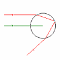

Indhold
- Bølgelære
-
- Farver og optik
- Farveblanding
- Komplementærfarver
- Øjets træthed
- Prismet
- Iskrystallen
- Billeddannelse
- Brydning, kugleflade
- Linsen
- Linsesystemer
- Spejlbillede
- Hulspejl
- Parabol
-
- Regnbuen
- Regnbuens
kegle
- Dråben
- Alexanders bånd
- Regnbuens farver
- Youngs interferens
- Polarisation
- Polarisation, farver
-
- Eksperimenter
- Brændvidde
- Krumningsradius
- Parabolsk spejl
- Forsøg med spalter
- Kunstig regnbue
- Regnbueforsøg
-
- Info
- Om Regnbuen
- Regnbuens historie
- Litteratur
- Download
- Sidste nyt